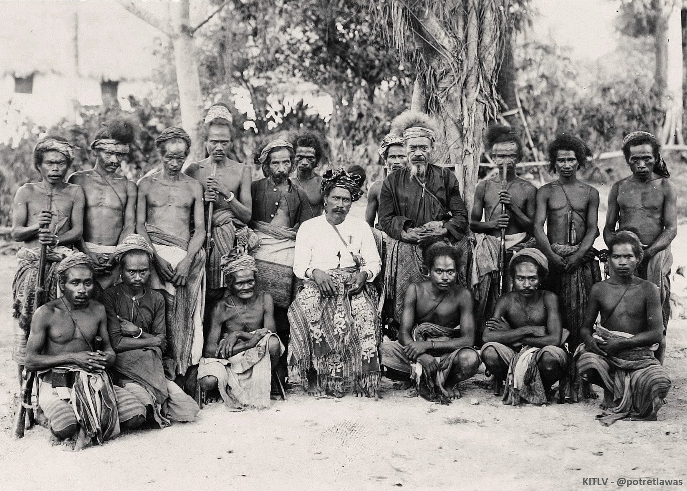

Mengenal budaya dan adat Amarasi
Sejarah Kerajaan Amarasi
Asal-usul masyarakat Amarasi tersimpan dalam beragam legenda turun-temurun yang sarat warna budaya. Salah satu kisah paling tua menyebutkan bahwa garis keturunan kerajaan Amarasi berakar dari pusat kebudayaan Wehali. Dalam legenda ini, dikisahkan seorang tokoh bangsawan bernama Nafi Rasi tanpa sengaja memecahkan sebuah mangkuk yang sangat berharga. Insiden ini menimbulkan kemarahan besar dari saudaranya, sehingga Nafi Rasi terpaksa meninggalkan tanah kelahirannya. Dengan ditemani oleh para pengikut setianya, ia memulai perjalanan pengasingan yang penuh tantangan. Mereka pertama-tama menetap di wilayah Beboki-Insana, terletak di bagian utara Wehali. Namun perjalanan mereka belum berakhir di sana rombongan ini terus melanjutkan pengembaraan mereka hingga mencapai pesisir selatan Pulau Timor bagian barat, yang kelak menjadi cikal bakal berdirinya kerajaan Amarasi.
Sumber WikipediaTenun Ikat

ESI
Motif Esi berarti daun ubi. Pada zaman kerajaan Amarasi banyak daun ubi yang tumbuh di sekitar kerajaan Amarasi. Hal ini yang menginspirasiuntuk menuangkan motif daun ubi sebagai motif untuk kain tenun ikat Amarasi.

BAUNEKI
Motif Bauneki berarti burung hantu. Motif ini menceritakan beragam fauna yang ada di kerajaan Amarasi, pada zaman kerajaan Amarasi burung hantu banyak menghuni hutan-hutan yang ada di sekitar kerajaan. Hal ini yang menginspirasi untuk menuangkan motif burung hantu sebagai motif untuk kain tenun ikat Amarasi.

KORNAK MATANAB
Motif ini menceritakan tentang kekayaan alam flora dan fauna yang berada di kerajaan Amarasi. Hal ini ditandai dengan banyaknyakawanan burung yang tinggal di hutan sekitar kerajaan Amarasi dan saling bertabrakan. Oleh sebab itu motif ini bergambar kepala burung yang saling bertabrakan.

NOE RIU
Motif noe riu adalah motif yang dipakai oleh masyarakat biasa. Motif ini menceritakan bahwa pada masa penjajahan masyarakat Amarasi mengalahkan banyak musuh dan membuang mayat musuhmusuhnya di sungai yang berkelok. Sungai tersebut terletak di sekitar kerajaan Amarasi. Berdasarkan cerita tersebut munculah motif Noe Riu yang artinya sungai berkelok.

KAIMANFAFA
Motif kaimanfafa dahulu kala hanya dipakai oleh raja Amarasi, seiring dengan perkembangan zaman siapapun boleh memakainya. Motif kaimanfafa artinya bergandengan tangan, motif ini menggambarkan dahulu kala raja Amarasi senang bekerja sama dan berteman dengan kerajaan lainnya. Hal ini ditunjukan dengan adanya kerjasama antara kerajaan amarasi dengan kerajaan di pulau Timor seperti kerajaan di Soe.

KAI NE'E
Motif. kai ne’e artinya enam simbol ketemukungan (Uim Ne’e- 6 rumah). Enam rumah tersebut berada pada masa pemerintahan kerajaan Amarasi pada masa lampau. Keenam ketemukungan tersebut adalah Sonafreno, Nunraen, Kuanbaun, Oetnona, Songkoro dan Oerantium. Motif Kai Ne’e ini menggambarkan sebuah ikatan persaudaraan yang terus menerus diwariskan dari nenek moyang kepada anak cucu, sehingga walaupun terpisah dalam karya, namun semangat kebersamaan terus dibangun dimanapun kita berada.

KORKASE
Motif korkase adalah motif pendatang baru, motif ini muncul setelah zaman penjajahan yaitu pada tahun 1945. Motif korkase artinya burung garuda,motif ini menggambarkan lambang negara Repuplik Indonesia yaitu burung garuda.

KAUN TUB HITU
Motif Kaun Tub Hitu berarti kepala ular. Motif ini berasal dari cerita legenda yang berasal dari Amarasi,di mana menceritakan tentang adanya seekor ular besar bertumpuk tujuh yang menghuni daerah di sekitar kerajaan Amarasi.

KRET NO TENU
Pada zaman kerajaan Amarasi motif Kret No Tenu digunakan oleh bidan atau dukun bersalin kerajaan, diceritakan bahwa apabila bidan atau dukun bersalin menggunakan tenun ikat Kret no Tenu masyarakat dan warga kerajaan mengetahui bahwa ratu atau permasuri akan melahirkan. Hal ini menunjukan bahwa arti dari motif Kret No Tenu adalah bidan atau dukun bersalin.

PAN BUAY ANA
Motif Pan Buay Ana berarti peti kecil atau keranda kecil. Menurut ceritanya, motif ini terinspirasi dari peti kecil atau keranda yang berada di kerajaan Amarasi yang digunakan untuk menyimpan bendabenda berharga serta pusaka yang di miliki oleh kerajaan Amarasi. Berdasarkan cerita tersebut munculah motif Pan Buay Ana